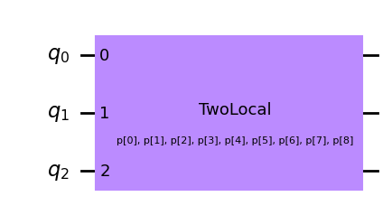
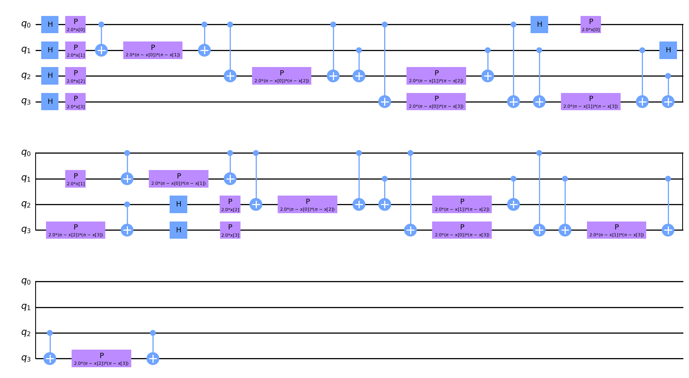

squlearn.encoding_circuit.QiskitEncodingCircuit
- class squlearn.encoding_circuit.QiskitEncodingCircuit(qiskit_circuit: BlueprintCircuit | Callable | QuantumCircuit, mode: str = 'auto', decompose: bool = False, feature_label: str = 'x', parameter_label: str = 'θp', **kwargs)
Wrapper to create sQUlearn encoding circuits from the Qiskit circuit library.
Example: create a encoding circuit from Qiskit TwoLocal map
from squlearn.encoding_circuit import QiskitEncodingCircuit from qiskit.circuit.library import TwoLocal local = TwoLocal(3, 'ry', 'cx', 'linear', reps=2, insert_barriers=True) QiskitEncodingCircuit(local).draw("mpl")
An alternative call can be made by passing the circuit library function and its arguments:
from squlearn.encoding_circuit import QiskitEncodingCircuit from qiskit.circuit.library import ZZFeatureMap QiskitEncodingCircuit(ZZFeatureMap,feature_dimension=4).draw("mpl")
- Parameters:
qiskit_circuit (Union[BlueprintCircuit, Callable,QuantumCircuit]) – A Qiskit circuit or a Qiskit circuit library function
mode (str) – Option for considering the circuit parameters as features or trainable parameters. Can be
featuresorparametersorauto. With auto, the mode is automatically determined depending on the parameter name. (default:auto)decompose (bool) – If True, the decompose method is called on the inputted circuit object. (default:
True)feature_label (str) – The label of the parameters that are considered as features. (default:
x)parameter_label (str) – The label of the parameters that are considered as trainable parameters. (default:
θp)**kwargs – Arguments for the Qiskit circuit library function if it is passed as a callable
- draw(output: str = None, feature_label: str = 'x', parameter_label: str = 'p', decompose: bool = False, **kwargs) None
Draws the encoding circuit circuit using the QuantumCircuit.draw() function.
- Parameters:
feature_label (str) – Label for the feature vector (default:”x”).
parameter_label (str) – Label for the parameter vector (default:”p”).
decompose (bool) – If True, the circuit is decomposed before printing (default: False).
kwargs – Additional arguments from Qiskit’s QuantumCircuit.draw() function.
- Returns:
Returns the circuit in qiskit QuantumCircuit.draw() format
- generate_initial_parameters(seed: int | None = None) ndarray
Generates random parameters for the encoding circuit
- Parameters:
seed (Union[int,None]) – Seed for the random number generator (default: None)
- Returns:
The randomly generated parameters
- get_circuit(features: ParameterVector | ndarray, parameters: ParameterVector | ndarray) QuantumCircuit
Returns the circuit of the Qiskit Encoding Circuit
- Parameters:
features (Union[ParameterVector,np.ndarray]) – Input vector of the features from which the gate inputs are obtained.
param_vec (Union[ParameterVector,np.ndarray]) – Input vector of the parameters from which the gate inputs are obtained.
- Returns:
The circuit of the Qiskit Encoding Circuit with the assigned parameters.
- get_params(deep: bool = True) dict
Returns hyper-parameters and their values of the Qiskit encoding circuit
No hyper-parameters are available for the Qiskit encoding circuit!
- Parameters:
deep (bool) – If True, also the parameters for contained objects are returned (default=True).
- Returns:
Dictionary with hyper-parameters and values.
- set_params(**params) None
Sets value of the encoding circuit hyper-parameters.
- Parameters:
params – Hyper-parameters and their values, e.g.
num_qubits=2.